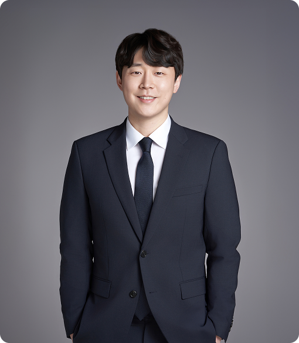
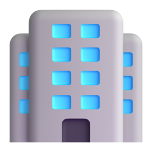

기업의 성장과 개인의 권리가 함께 가는 길, 온유가 늘 고민하며 걸어온 과정입니다. 인사·노무 리스크를 사전에 점검해 갈등을 예방하고, 문제 발생 시 실질적인 해결책을 제시합니다. 법률 검토부터 급여 관리, 사건 대리까지 민감한 사안을 끝까지 책임지겠습니다.
근로감독 대비 사전 점검 및
인사·노무 체계 개선
퇴직금 미지급 진정 대리
체불 퇴직금 전액 지급 및 권리 구제임금체불 진정 대응
D건설사 체불 금액 조정 및 사용자 책임 최소화취업규칙 및 복무규정
전면 개정 컨설팅
부당해고 구제신청 대리
부당해고 인정 판정 및 금전보상 도출산업재해 승인 대응
K건설현장 비업무상 요인 입증 통한 일부 불승인적법도급 진단 및 근로자파견
리스크 개선 컨설팅
부당노동행위 구제신청 대응
M건설사 구제신청 기각 판정급여·4대보험 통합 관리
체계 구축 및 운영 지원
현장 소장 부당해고
구제신청 대응
단체교섭 대응 및
안정적 협약 체결 지원
직장 내 괴롭힘 진정 대응
B기업 업무 적정성 입증 및 시정명령 없이 종결2018년부터 법 조항 너머 사람의 일을 고민하며,
믿고 맡길 수 있는 파트너로 함께해 왔습니다.
강신의 대표 노무사
- [現] 온유 인사노무컨설팅 대표 노무사
- [現] 공인노무사회 일터혁신 컨설턴트
- [現] 고용노동부 청소년근로권익센터 상담위원
- [現] 고용노동부 직업계고 현장실습·코칭 수행위원
- [現] 고용노동부 근로개선 자율개선 수행노무사
- [前] 열린노무법인 근무 (2019~2025)
- [前] 대전충청·대구경북·부울경 철·콘 사용자연합회 자문노무사
- [前] 대한기계설비건설협회 본사 및 회원사 전문 자문노무사

기업 자문부터 노동사건까지,
전 영역을 다룹니다

기업 자문
기업 운영 전반의 인사·노무 이슈를 지속적으로 지원합니다.
상시 노무 자문 / 노동법·의무교육 / 취업규칙 및 규정 관리 / 근로감독 사전 대응
인사제도 구축
조직에 맞는 인사제도와 운영 체계를 설계합니다.
인사·평가제도 구축 / 임금체계 설계 / 직무분석·직무평가 / 근로계약서·취업규칙 정비
노동사건 대응
분쟁 발생 시 신속하고 체계적으로 대응합니다.
부당해고·임금체불 / 노동위원회 사건 / 직장 내 괴롭힘·성희롱 / 근로감독 대응
급여·건설·산재 지원
반복 업무부터 산업별 전문 노무관리까지 함께합니다.
급여·4대보험 관리 / 건설업 노무관리 / 산재·행정절차 지원 / 정부지원 제도 연계
서류 대행이 아니라,
실질적인 현안 해결을 약속합니다
법 조항 너머, 사람의 일을 봅니다
규정을 맞추는 것을 넘어, 현장의 실제 문제를 함께 풀어갑니다.
담당 노무사가 처음부터 끝까지 직접 대응
상담부터 기관 출석, 사후 관리까지 담당자가 바뀌지 않고 끝까지 함께합니다.
리스크 차단과 비용 절감을 함께
사후 대응이 아닌 사전 점검으로 분쟁 발생 자체를 최소화합니다.
모두가 즐겁게 일하는 일터,
온유가 함께 만들어갑니다.
온유가 자문사와 함께 성장합니다
2026년 기준
대한기계설비 자문
일터의 크고 작은 고민,
지금 온유와 함께 해결하세요.
연락처를 남겨주시면 24시간 이내에 회신드립니다.